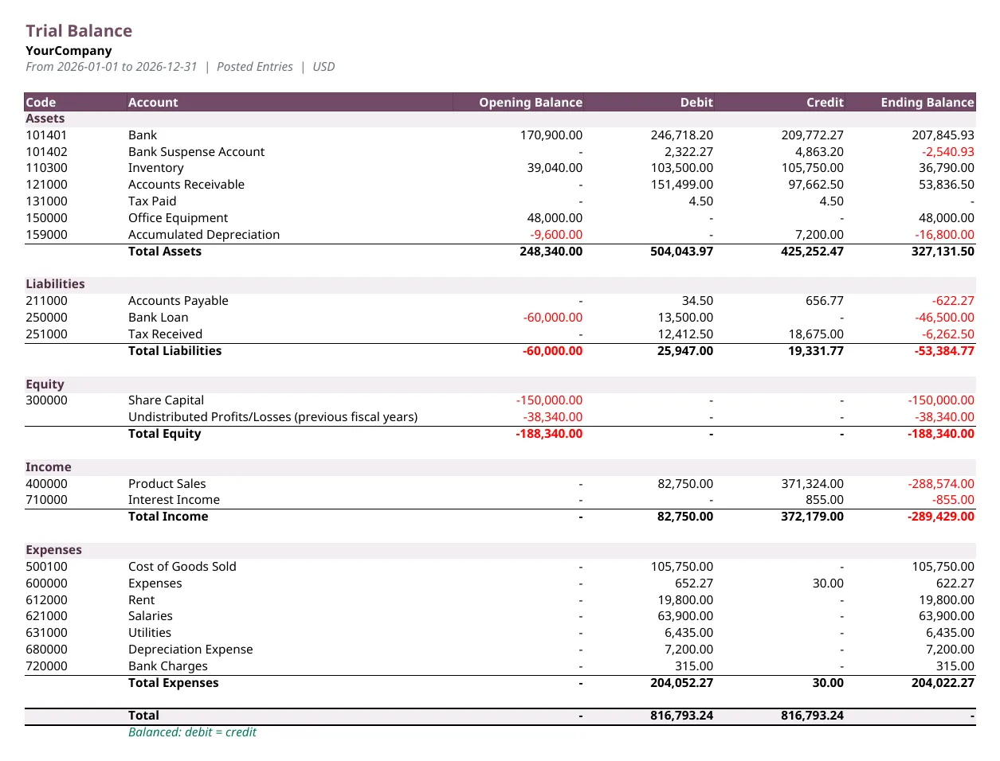
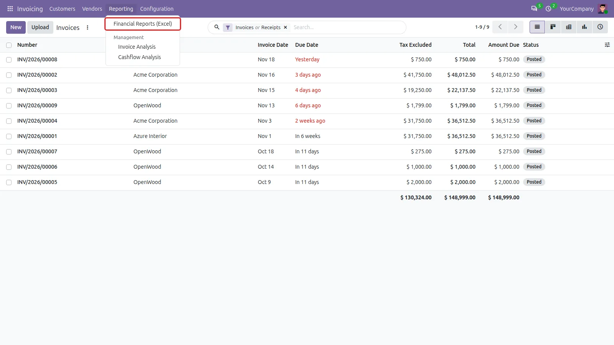
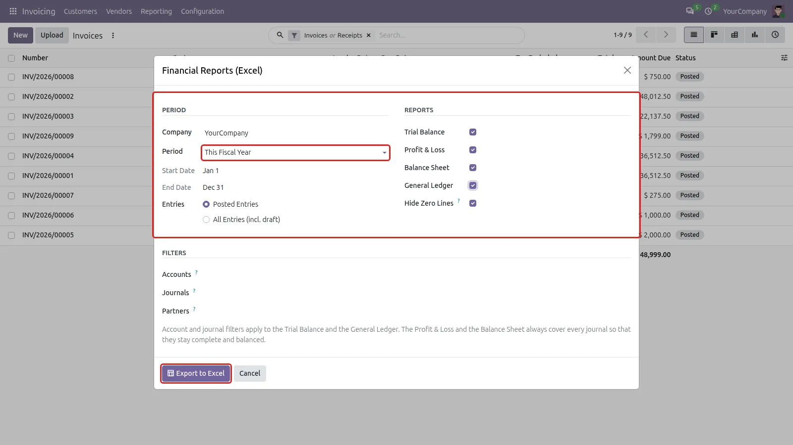
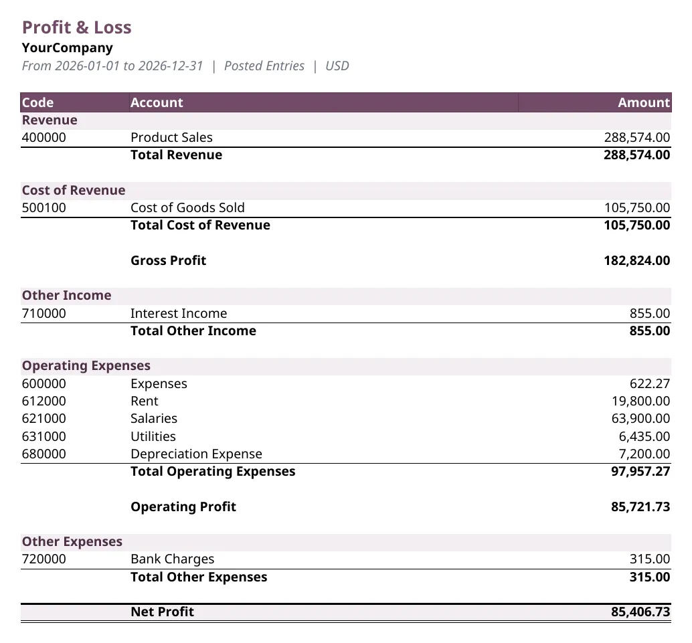
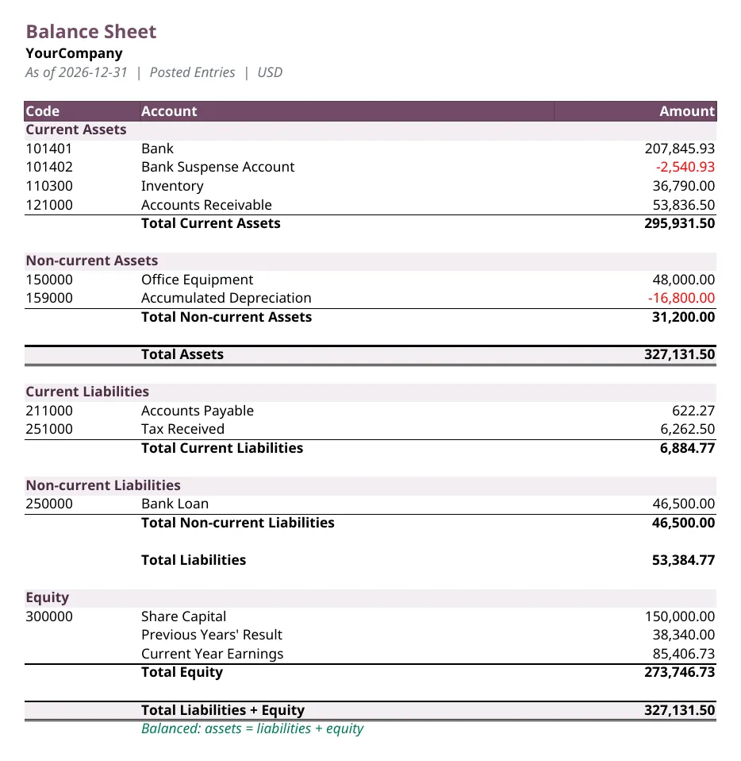
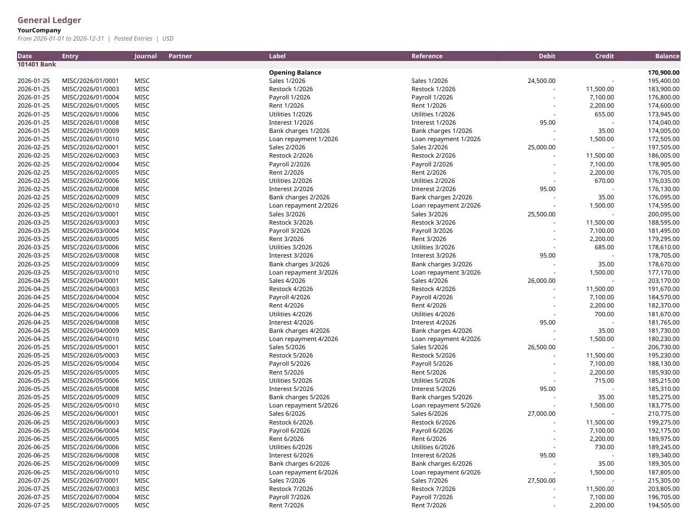

Financial Reports Excel - Trial Balance, P&L, Balance Sheet
Trial Balance, Profit and Loss, Balance Sheet and General Ledger Excel export in one formatted XLSX workbook, for Odoo Community and Enterprise.
- Price
- $59
- Odoo versions
- 16.0
- 17.0
- 18.0
- 19.0
- 20.0
- Technical name
tamadoo_financial_reports_xlsx- License
- OPL-1

Text and screenshots below are from the Odoo 20.0 version of this module.
Trial Balance, General Ledger, Profit & Loss and Balance Sheet in one formatted Excel workbook, from one wizard. Totals are checked: the Trial Balance and the Balance Sheet always balance.

The four statements accountants ask for
Odoo Community has no financial reports. This module adds them as an Excel export that your accountant, auditor or bank can open straight away.
Trial Balance
Opening balance, debit, credit and ending balance per account, grouped by account type, with a balance check.
General Ledger
Every journal item with date, entry, journal, partner, label and running balance; filter by account, partner and journal.
Profit & Loss
Revenue, cost of revenue, gross profit, other income, operating expenses, operating and net profit.
Balance Sheet
Current and non-current assets and liabilities, equity with previous years' result and current year earnings.
Correct opening balances
Balance sheet accounts carry forward; income and expense accounts restart at your fiscal year, exactly like Odoo's own reports.
One click
Period presets (month, quarter, fiscal year), posted or all entries, multi-company, company currency format.
Step by step
Open the wizard
Invoicing / Accounting → Reporting → Financial Reports (Excel).

Pick the period and the reports
Choose a preset or custom dates, posted or all entries, and tick the statements. Optional account, journal and partner filters for the Trial Balance and the General Ledger.

Profit & Loss
Revenue and cost of revenue give the gross profit; other income and expenses lead to the net profit.

Balance Sheet
As of the end date, with the previous years' result and the current year earnings in equity, and an automatic check that assets equal liabilities plus equity.

General Ledger
Opening balance, journal items with running balance and the total per account.

Ready after install
- Install the module. No configuration is needed.
- Open Reporting → Financial Reports (Excel), pick the period and the statements.
- Click Export to Excel.
Requirements: Odoo 20.0, depends on account (Invoicing). Available to Billing Administrators / accountants. Accounts are grouped by their Odoo account type; set the fiscal year end in the accounting settings for correct opening balances.
Get Financial Reports Excel
Questions before buying? Write to tama.odoo@gmail.com.